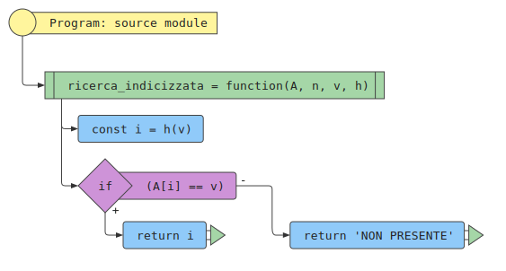

Determinare se un valore \( v \) dato è presente in una sequenza \( A \) di \( n \) valori. Se il valore \( v \) è presente, restituirne la posizione, nota la distribuzione dei valori e determinata una funzione 'indicizzazione \( h(v) \) che produce valori interi.
Una sequenza \( A \) di \( n \) valori, \( A = [a_1, a_2, \ldots, a_n] \) e un valore \( v \).
Un indice \( i \) tale che l’elemento in posizione \( i \)-esima della sequenza, \( a_i \) sia uguale a \( v \), oppure un valore speciale che indica che \( v \) non compare nella sequenza \( A \).
La sequenza \( A = [Cip, Gastone, Minnie, Pluto, Topolino ] \) di \( n = 5 \) elementi e il valore \( v = Pluto \). Sia data anche una procedura \( h \) che dato un valore di tipo stringa \( [c_1, c_2, \ldots, c_{k_v}]\) restituisce il numero intero dato da:
h (v):
sia posizione := posizione nell'alfabeto del primo carattere di v
sia indice := (posizione + 1) / 4
restituisci l'indice
Si noti l’applicazione della procedura \( h \) ai valori della sequenza:
| Valore | Primo carattere | Indice alfabeto | h (Valore) |
|---|---|---|---|
| Cip | C | 3 | 1 |
| Gastone | G | 7 | 2 |
| Minnie | M | 13 | 3 |
| Pluto | P | 16 | 4 |
| Topolino | T | 20 | 5 |
L’indice \( i = 4 \) tale che \( a_4 \) è l’elemento \( Pluto \).
L’algoritmo di ricerca indicizzata con accesso diretto consiste nella produzione del valore dell’indice a partire dal valore stesso e nella verifica della presenza del valore nella posizione prevista.
Se il valore è nella posizione dell’indice, allora restituisci l’indice, altrimenti NON_PRESENTE per indicare che il valore non è presente nella sequenza.
Per poter cercare un elemento è necessario prima poterlo inserire e, se necessario, può essere richiesto di cancellarlo.
Nel caso d’esempio la funzione d’indicizzazione produce valori interi nell’intervallo [1, 5]. La sequenza è composta da 5 elementi e non presenta “buchi”. L’ordinamento dei valori resta lo stesso dei valori.
Se la sequenza di valori è nota a priori, può essere possibile determinare funzioni che mappa ogni elemento in un numero intero tra 1 e \( n \), dove \(n \) è il numero di elementi della sequenza stessa. Tale funzione si chiama hash perfetta minimale.
Se la funzione mappa ogni elemento in un intero tra 1 e \( m \), dove \( m > n \) allora la funzione è hash perfetta ma non è minimale.
Se \( v_i \leq v_j \implies h(v_i) \leq h(v_j) \) allora si dice che la funzione hash _preserva l’ordinamento.
La funzione d’indicizzazione dell’esempio è quindi: perfetta, mininale e preserva l’ordinamento.

Numero accessi: \( 1 \)
Numero accessi: \( 1 \)
Numero accessi: \( 1 \)
Numero accessi: \( 1 \)
Numero accessi: \( m \), \(m \leq n \)
Numero accessi: \( 1 \)